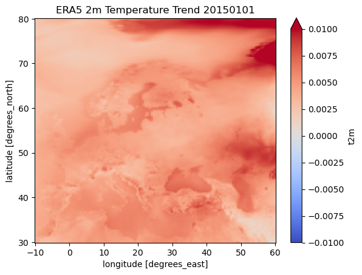

Providing a bespoke function to the temporal reduce methods
[1]:
from statsmodels import api as sm
import numpy as np
import matplotlib.pyplot as plt
from earthkit.transforms import aggregate as ekt
from earthkit import data as ekd
from earthkit.data.testing import earthkit_remote_test_data_file
ekd.settings.set("cache-policy", "user")
/tmp/ipykernel_4311/909669290.py:5: FutureWarning: The 'earthkit.transforms.aggregate' module is deprecated and will be removed in version 2.X of earthkit.transforms. Please import the from earthkit.transforms, e.g.: from earthkit.transforms import spatial
from earthkit.transforms import aggregate as ekt
Load some test data
All earthkit-transforms methods can be called with earthkit-data objects (Readers and Wrappers) or with the pre-loaded xarray.
In this example we will use hourly ERA5 2m temperature data on a 0.5x0.5 spatial grid for the year 2015 as our physical data.
First we download (if not already cached) lazily load the ERA5 data (please see tutorials in earthkit-data for more details in cache management).
We convert the data to an xarray.Dataset with some additional options which are better suited for the data we are working with.
[2]:
# Get some demonstration ERA5 data, this could be any url or path to an ERA5 grib or netCDF file.
remote_era5_file = earthkit_remote_test_data_file("test-data", "era5_temperature_europe_2015.grib")
era5_data = ekd.from_source("url", remote_era5_file)
era5_xr = era5_data.to_xarray(time_dim_mode="valid_time").rename({"2t": "t2m"})
era5_xr
[2]:
<xarray.Dataset> Size: 660MB
Dimensions: (valid_time: 1460, latitude: 201, longitude: 281)
Coordinates:
* valid_time (valid_time) datetime64[ns] 12kB 2015-01-01 ... 2015-12-31T18...
* latitude (latitude) float64 2kB 80.0 79.75 79.5 79.25 ... 30.5 30.25 30.0
* longitude (longitude) float64 2kB -10.0 -9.75 -9.5 ... 59.5 59.75 60.0
Data variables:
t2m (valid_time, latitude, longitude) float64 660MB ...
Attributes: (12/13)
param: 2t
paramId: 167
class: ea
stream: oper
levtype: sfc
type: an
... ...
date: 20150101
time: 0
domain: g
number: 0
Conventions: CF-1.8
institution: ECMWFReduce the ERA5 data using a bespoke function over the time dimension
The default reduction method is mean, other methods can be applied using the how kwarg.
Note that we do not need to worry about the data format of the input array, earthkit will convert it to the required xarray format internally.
Define a bespoke function for the reduction
When providing a our own function to the reduce method it must conform the the Xarray requirements defined in their documentation pages. Specifically:
“Function which can be called in the form f(x, axis=axis, **kwargs) to return the result of reducing an np.ndarray over an integer valued axis.”
We will define a function which calculates the trend based on the [statsmodels Ordinary Least Squares model]https://www.statsmodels.org/dev/generated/statsmodels.regression.linear_model.OLS.html.
Note that you will need to install statsmodels for the following function, it is available via PyPi and conda.
[3]:
def trend(x, axis=0, **kwargs):
# Add a constant for the intercept
X = sm.add_constant(np.arange(x.shape[axis]))
_x = np.rollaxis(x, axis)
_x_shape = _x.shape
_x_flat = _x.reshape(_x_shape[0], -1)
_out = np.zeros_like(_x_flat[0])
for point in range(_x_flat.shape[1]):
model = sm.OLS(_x_flat[:, point], X).fit()
_out[point] = model.params[1]
return _out.reshape(_x_shape[1:])
We can now use this method in our temporal reduce function to calculate the trend at each grid point.
[4]:
era5_t_trend = ekt.temporal.reduce(era5_xr, how=trend)
era5_t_trend
[4]:
<xarray.Dataset> Size: 456kB
Dimensions: (latitude: 201, longitude: 281)
Coordinates:
* latitude (latitude) float64 2kB 80.0 79.75 79.5 79.25 ... 30.5 30.25 30.0
* longitude (longitude) float64 2kB -10.0 -9.75 -9.5 ... 59.5 59.75 60.0
Data variables:
t2m (latitude, longitude) float64 452kB 0.002469 0.00255 ... 0.001132
Attributes: (12/13)
param: 2t
paramId: 167
class: ea
stream: oper
levtype: sfc
type: an
... ...
date: 20150101
time: 0
domain: g
number: 0
Conventions: CF-1.8
institution: ECMWF[5]:
# A simple matplotlib plot to view the data:
era5_t_trend.t2m.plot(cmap="coolwarm", vmin=-0.01, vmax=0.01)
plt.title("ERA5 2m Temperature Trend 20150101")
[5]:
Text(0.5, 1.0, 'ERA5 2m Temperature Trend 20150101')

[ ]: